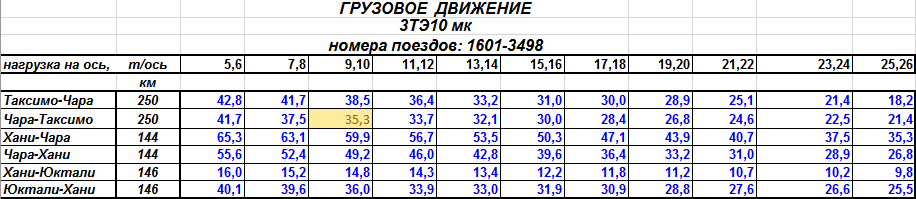
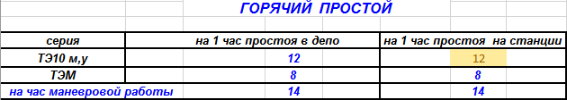
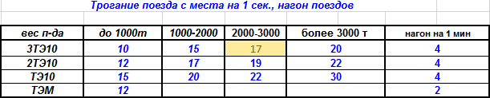
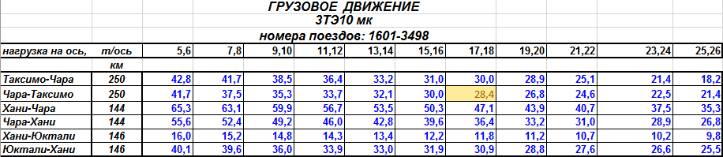
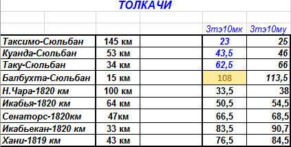
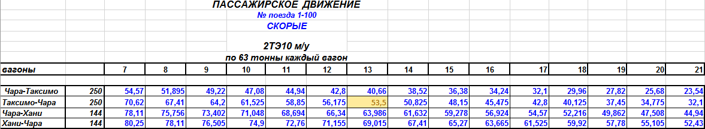
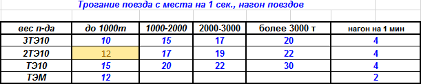
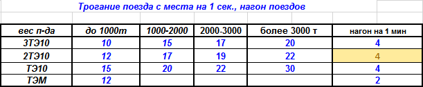

Для определения нормы топлива за поездку необходимо:
1. Определить нагрузку на ось в составе путём деления веса поезда на количество осей.
2400 т : 276 осей = 8,69 т/ось
2. Исходя из нагрузки на ось, находим по таблице норм расхода удельный расход топлива на 10000 ткб. Например, на участке Чара - Таксимо при нагрузке на ось 17,75 расход на 10000 ткб составляет 35,3 кг.

3. По формуле находим расход топлива на перемещение от начального до конечного пункта соответствующего участка.
(2400 т * 250 км * 35,3 кг) : 10000 = 2118 кг
4. Определяем время от контрольного поста до отправления, время стоянок на промежуточных станциях и время от прибытия до сдачи тпс. Допустим, что сумма этого времени составила 180 минут. Исходя из нормы расхода топлива на горячий простой на станции, получим:

180 мин / 60 * 12 кг/час * 3 секции = 108 кг
5. Количество стоянок на промежуточных станциях (перегоне) умножаем на норму топлива для трогания проекта с места в зависимости от веса поезда.

17 * 4 = 68
6. Определяем норма топлива на поездку в целом
2118 + 108 + 68 = 2294 кг
1 способ
Определяем средний вес поезда приходящийся на головной локомотив по формуле:
Qг.ср = Q(L - Lг) + QгLг/L
где Qг.ср - средний вес поезда приходящийся на головной локомотив, т
Q - вес поезда, т
Qг - вес поезда приходящийся на головной локомотив на участке подталкивания, т
L - общая протяжённость участка, км
Lг - протяжённость участка подталкивания, км
Пример. Определяем нагрузку на ось:
4900 т : 276 осей = 17,75
Находим средний вес приходящийся на головной локомотив по формуле:
Qг.ср = (4900(250 - 15) + 2450*15)/250 = 4753т
Находим норму топлива на перемещение поезда от начальной до конечной станции:

4753 * 250 * 28,4 / 10000 = 3374 кг
Плюсуя к этой норме расход на стоянки и трогание с места получим:
3374 + 108 + 68 = 3550 кг
2 способ
Определение нагрузки на ось тем же способом.
Находим расход топлива на перемещение проезда от начальной до конечной станции без участка подталкивания:
4900 * (250 - 15) * 28,4 / 10000 = 3270 кг
Находим расход топлива на участке подталкивания:
2450 * 15 * 28,4 / 10000 = 104 кг
Суммируя эти данные получим норму топлива на перемещение поезда от начальной до конечной станции с толкачом на перегоне Балбухта - Сюльбан
3270 + 104 кг = 3374 кг
Плюсуя нормы на стоянки и трогании получим норму за поездку:
3374 + 108 + 68 = 3550 кг
Для определения нормы расхода топлива подталкивающим локомотивом необходимо определить долю веса поезда приходящегося на толкач. При наличии в голове и хвосте локомотивов одинаковой мощности, вес проезда распределяется 50/50%. Норма определяется исходя из удельной нормы на подталкивание.

2450 * 15 * 108 / 10000 = 396 кг
Из таблицы норм расхода находим вес поезда (среднюю нагрузку на ось) и участок следования.
Определяем удельный расход.
Находим норму расхода топлива на перемещение поезда от начальной до конечной станции согласно
серии локомотива и рода поезда.
Например: поезд № 76, вес 731, 13 вагонов на участке Таксимо - Чара, тепловоз 3590.

731 * 250 * 53,5 / 10000 = 977 кг
Находим расход топлива на время от контрольного поста до отправления поезда и от прибытия до сдачи тпс, а также время промежуточных стоянок (неграфиковых). Например 190 минут.
12 кг/ч * 2 секции * 190 / 60 = 76 кг
Определяем расход топлива на разгон при неграфиковых стоянках, если такие есть.

3 стоянки * 12 кг = 36 кг
Определяем расход на нагон опоздания на каждую минуту (например 18 минут).

18 минут * 4 кг = 72 кг
Итого за всю поездку получим:
977 + 76 + 36 + 72 = 1161 кг